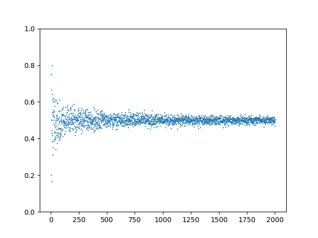
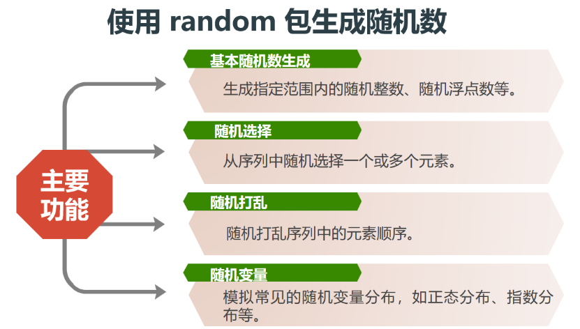
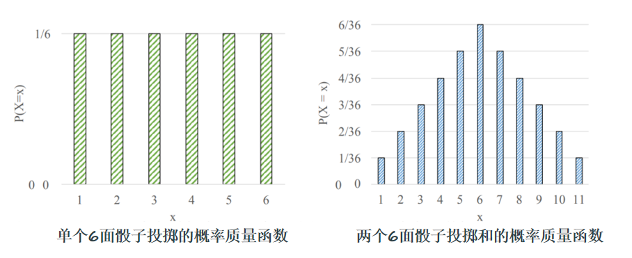

概率论的Python计算实现
1 概率基础知识¶
1.1 样本空间和事件空间¶
样本空间： 实验的所有可能结果的集合。
事件空间： 是样本空间的某个子集，用集合符号表示为（E ∈ S ）
1.2 频数、频率和概率的统计学定义¶
频数： 在相同的条件下，进行了\(n\)次随机试验，在这\(n\)次试验中，事件\(A\)发生的次数\(n_A\)称为事件\(A\)发生的频数。
频率： 比值\(\dfrac{n_A}{n}\)称为事件\(A\)发生的频率。
概率： 当 \(n\) 较小时频率波动幅度比较大，当 \(n\) 逐渐增大时， 频率趋于稳定值，这个稳定值从本质上反映了事件在试验中出现可能性的大小。它就是事件的概率。
1.3 概率的精确定义¶
假设你进行了\(n\)次实验。 事件\(E\)发生的概率是实验中结果为\(E\)的次数与总实验次数的比值（当实验次数趋近于无穷大时）。
1.4 示例：模拟抛硬币¶
1 2 3 4 5 6 7 8 9 10 11 12 13 14 15 16 17 18 19 20 21 22 23 24 25 26 27 28 29 30 | |

2 计算机中随机数及Python实现¶
2.1 计算机中随机数¶


2.2 Python中实现随机数¶
2.2.1 random 库¶
2.2.1.1 主要功能¶

2.2.1.2 子函数¶
random()：生成一个[0.0, 1.0)之间的随机浮点数。uniform(a, b)：生成一个[a, b]之间的随机浮点数。randint(a, b)：生成一个[a, b]之间的随机整数。randrange([start,] stop[, step])：生成一个[start, stop)之间以step为步长的随机整数。choice(seq)：从非空序列seq中随机选择一个元素。shuffle(list)：将list中的元素随机打乱。sample(population, k)：从population中随机选择k个不重复的元素。normalvariate(mu, sigma)：生成一个符合正态分布的随机数，mu是均值，sigma是标准差。
2.2.1.3 dir() 函数¶
查看函数名称
dir(funcName) 返回该库中的所有函数名称
2.2.1.4 help() 函数¶
带说明的函数列表
help(funcName) 返回该库中所有函数详细说明
3 概率进阶知识¶
3.1 条件概率¶
定义1 在事件\(F\)已经发生的情况下，事件\(E\)发生的概率
定义2 （链式法则）
3.2 贝叶斯定理¶
是什么：

例子：

- 后验概率：
后验概率是结合先验概率和观测到的新证据后，对事件发生概率的更新结果。通过贝叶斯定理，将初始信念(先验概率) 与新的数据(似然) 进行综合，得出新的、更新后的概率，称为后验概率。后验概率代表了在考虑了当前观测信息之后，对事件可能性的新评价。 - 似然概率：
似然概率是指在假设某一特定事件或假设为真时，观察到当前证据或数据的概率。它反映了新观测到的信息在假设成立的前提下的可能性。似然概率是贝叶斯定理中的关键部分，因为它将观测信息与假设进行连接，用于更新对假设的信念。 - 先验概率：
对某一事件发生的初始估计概率，基于已有的背景知识或历史数据，在未考虑当前新信息的情况下得出。 - 归一化参数：
归一化参数是对贝叶斯定理中的分母项进行描述的参数，用于确保后验概率是有效的概率值（总和为1）。在贝叶斯定理中，归一化参数等于所有可能情况下的似然与先验概率的乘积之和。它保证了在考虑所有可能假设的情况下，总的概率质量维持在1，从而使后验概率在概率分布上成立。

3.3 独立性原理¶

注意多事件相互独立条件是对于任意子集上式都成立
3.4 随机事件模拟¶
3.4.1 Python中使用 set类 表示事件¶
set类 即集合，用 set() 来初始化空集合（不能用 {} 来初始化空集合，会被识别为字典）
常用函数与运算符：

3.4.2 随机事件模拟案例¶
考虑抛一枚六面体骰子，观察出现的点数的随机试验。
- 事件A1：表示事件“出现偶数点”，即 \(A_1 = \{2, 4, 6\}\)。
- 事件A2：表示事件“出现的点数不超过3”，即 \(A_2 = \{1, 2, 3\}\)。
用 Python 中 set 对象来表示相关的随机事件及其运算：
\(A_1\cup A_2\), \(A_1\cap A_2\), \(A_1-A_2\), \(\overline{A_1}\), 并验证\(\overline{A_1 \cup A_2}=\overline{A_1}\cap \overline{A_2}\), \(\overline{A_1\cap A_2}=\overline{A_1}\cup \overline{A_2}\)
1 2 3 4 5 6 7 8 9 10 11 12 13 14 | |
输出：
S\={1, 2, 3, 4, 5, 6}:抛掷骰子的样本空间.
A1\={2, 4, 6}:偶数点.
A2\={1, 2, 3}:点数不超过3.
A1+A2\={1, 2, 3, 4, 6}:偶数点或点数不超过3.
A1*A2\={2}:不超过3的偶数点.A1-A2\={4, 6}:超过3的偶数点.A1\={1, 3, 5}:奇数点.\(A1+A2\)_\=A1*A2 is True.
\(A1\*A2\)_\=A1+A2 is True.
3.5 古典概型¶
3.5.1 定义与实现¶
定义： 如果随机试验E的样本空间是一个有限集合，且每一个样本点作为基本事件发生的概率均相等，称E是一个等概模型或古典概型。
假定以 \(S\) 为样本空间的随机试验是一个等概模型, 事件 \(A⊆S\) 。若能算得 \(|S|=n\), \(|A|=m\), 我们知道 \(P(A)=\dfrac{m}{n}\) 。我们把这样的计算方法定义成下列的 Python 函数。
1 2 3 4 5 6 | |
3.5.2 应用¶
将一枚均匀硬币抛掷三次，计算事件：
- \(A_1\)：“恰有一次出现正面”的概率\(P(A_1)\) ；
- \(A_2\)：“至少有一次出现正面”的概率\(P(A_2)\)。
1 2 3 4 5 6 7 8 9 10 11 12 13 14 15 16 17 18 19 20 21 22 23 24 25 26 27 | |
输出：
S = {(1, 0, 1), (1, 1, 0), (0, 1, 0), (0, 0, 0), (1, 0, 0), (0, 0, 1), (1, 1, 1), (0, 1, 1)}
P(A1) = 3/8
P(A2) = 7/8
3.6 随机变量分布模拟与绘图¶
3.6.1 随机变量¶
分类：
- 离散型： 取有限个可能取值或可数个可能取值。
- 连续型： 可以在一个区间或若干个区间取值。
3.6.2 概率质量函数（PFM）¶
概率质量函数（PMF）将随机变量的可能结果映射到相应的概率。

3.6.3 期望值¶
其他名称：平均值、期望值、加权平均值、质心、一阶矩
定义：
伯努利分布（0-1）¶
3.7 蒙特卡洛模拟¶
概念：
- 统计模拟方法，是以概率统计理论为核心的数值计算方法
- 核心思想是使用随机数(或更常见的伪随机数)来大量重复地随机采样,通过对采样结果进行统计分析而得到数值结果
步骤：
- 构造或描述概率过程，将不具有随机性质的问题转化为具有随机性质的问题。
- 从已知的概率分布中进行大量的随机抽样
- 对随机抽样的结果进行统计分析，确定估计量，对应所要求的问题的解
3.7.1 估算平方根 \(\sqrt{2}\).¶
步骤：
- 生成\([0，2]\)范围内的服从均匀分布的随机数
- 对随机数取平方\(x^2=4,[0,4]\)(样本空间)
- 统计随机数落到\([0,2]\)范围的数量(事件空间)
- 概率为事件空间/样本空间 \(\cfrac{\sqrt2}{2}\)
1 2 3 4 5 6 7 8 9 10 11 12 13 14 15 16 17 18 19 20 21 22 23 | |
3.7.2 估算圆周率 \(\pi\)¶
步骤：
- 构造概率过程：正方形内的点落到内切圆中的概率
- 从均匀分布中进行大量的随机抽样：在生成正方形范围内的服从均匀分布的随机数
- 对随机抽样的结果进行统计分析，确定估计量，对应所要求的问题的解：统计落到圆形范围内的随机数的数量，计算频率，多次重复试验，则可获得近似概率
方法一：用 random 和 list 实现 \(x\in[-1,1],y \in [-1,1]\)
1 2 3 4 5 6 7 8 9 10 11 12 | |
方法二：用 numpy 实现 \(x\in[-1,1],y \in [-1,1]\)
- 生成正方形范围内的随机整数
- 统计落在圆内的点
- 计算 \(\pi\)
1 2 3 4 5 6 7 8 9 10 11 12 13 14 15 16 17 18 19 20 21 22 23 24 25 26 27 28 29 30 31 | |
3.8 朴素贝叶斯¶
- 一种基于概率论的机器学习分类算法
有关贝叶斯定理的内容详见3.2 贝叶斯定理
步骤
- 收集数据，并提取特征。
- 对于每个类别，计算其在所有样本中出现的概率，称之为先验概率。
- 对于每个特征，计算它在每个类别下的概率，称之为似然概率。
- 根据贝叶斯定理，计算给定特征下，每个类别出现的概率，称之为后验概率。
- 根据后验概率的大小判定分类。